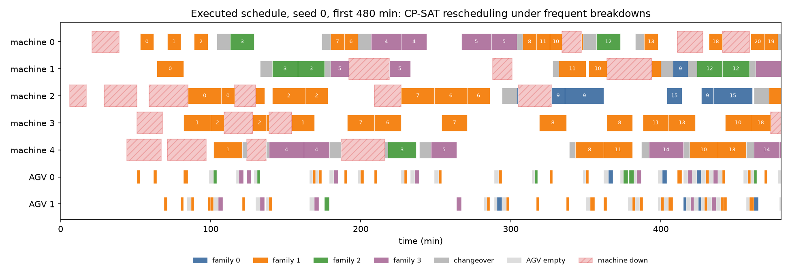

A small workshop: five machines, two AGVs that carry the jobs between them, four product families that need a changeover whenever a machine switches family, orders arriving at random, and machines that break down. Every time something happens, a controller has to decide again which machine each job goes to and in which order the machines work. This page compares three ways of deciding, on the same simulated days: the dispatching rules a shop floor uses, rescheduling with a constraint-programming model (OR-Tools CP-SAT) at every event, and a reinforcement-learning agent (DQN) that learns which rule to apply. Every schedule any method executes is verified by an independent checker.

A dispatching rule looks at one machine's queue at a time: when the machine is free, take the job that arrived first (FIFO), the shortest one (SPT), the most urgent one (EDD) or the one that needs the shortest changeover (SST). Rules are instantaneous and robust, and they are what most shops run. A model-based planner looks at the whole shop and the next few hours, but it costs computing time and is only as good as its model. A learned policy promises the best of both, if it can learn something the rules do not already know.
Which of the three gives jobs that are less late, how much of the difference survives breakdowns, and where does it come from? To answer it fairly, the three controllers face the same jobs and the same breakdowns, and the comparison is paired seed by seed.
Everything here is synthetic. The workshop, its processing and changeover times, the layout, the arrivals and the breakdowns are drawn from seeded random generators: no data from a real plant, no connection to real equipment. It is a modelling and comparison exercise, not a production tool.
A discrete-event simulation in SimPy plays the role of the real shop. It takes no decision itself: it asks the controller and logs every piece of work and every AGV trip.
| Element | Model |
|---|---|
| Machines | 5 machines, one station each, plus a load station where jobs enter |
| Products | 4 families of 4 operations; each operation can run on 1 to 3 machines, with machine-dependent times (6 to 30 min) |
| Changeovers | Sequence-dependent, 3 to 10 min and asymmetric, when a machine switches family; none within a family. A changeover starts once the machine is free and the job is there |
| Transport | 2 AGVs, one job at a time, 2 to 3 min between stations; requests go first come first served to the nearest idle AGV, for every method |
| Arrivals | 60 jobs per run, Poisson arrivals (one every 20.8 min on average: machines loaded at 60 % before changeovers), uniform family mix |
| Due dates | Arrival plus 2 to 4 times the job's shortest total processing time |
| Breakdowns | Exponential time between failures per machine, repair 10 to 30 min; the interrupted operation resumes. A controller learns that a machine failed and the mean repair time, not the actual one |
| Two levels | No breakdowns, and frequent breakdowns: mean time between failures 120 min per machine, about 14 % downtime |
Routing is the same for the rules and for the agent: send the job to the eligible machine with the earliest expected finish, counting the travel, the work already committed there and the expected end of a repair. The rule only decides the sequence. When a machine fails, the jobs waiting in front of it are routed again.
At every arrival, breakdown and repair, the controller takes a snapshot of the shop (where each job is, what each machine is doing, when a broken machine should be back) and solves a flexible job-shop model of the jobs present:
Only the beginning of each plan is ever executed: the next event replaces it. What the model does not contain is the AGVs. A move is a fixed lag (travel plus a 2-minute allowance, the median wait for an AGV measured in simulation), while the simulated shop moves real AGVs, so the plan and the shop drift apart and the next replan absorbs the difference. The model knows nothing about future arrivals or failures.
The model reuses the patterns of my satellite pass planning study: optional intervals, NoOverlap, and sequence-dependent transitions between consecutive tasks.
At each sequencing decision (a machine is free and at least two jobs wait for it) the agent chooses one of the four rules, and the job that rule selects starts. Its state has 29 features: for the job each rule would pick, its processing time, changeover, slack, remaining operations and waiting time, plus queue and shop statistics. The reward is minus the increase in the tardiness the shop is already committed to, so the rewards of a run sum exactly to minus its total tardiness. It is a Double DQN with a replay buffer and a soft target update, built on the code of my CartPole DQN tutorial.
A simulation can hide bugs that make a method look good. So every executed schedule, of every method, goes through a checker that never looks at the simulator's state or at a solver model. From the workshop data, the scenario and the raw log alone, it re-derives every constraint: each operation done once, on an eligible machine, for its full duration; no overlap and no work during downtime; the exact changeover between consecutive families; each AGV on a continuous path at the layout's travel times; each job physically carried from station to station before its next operation. The tests inject each kind of violation into a valid log and check that it is caught. All 480 test runs passed it.
20 test seeds, 60 jobs per run, two disturbance levels, 7 methods. Mean over the seeds with a 95 % bootstrap interval. "Greedy replan" is an ablation: the same event-driven loop as CP-SAT, but the plan is the greedy warm start, without the solver.
| Frequent breakdowns | mean tardiness (min) | max tardiness (min) | changeover time (min) | decision time per run |
|---|---|---|---|---|
| FIFO | 60.8 [41.9, 82.2] | 216 | 1091 | 1 ms |
| SPT | 45.4 [32.0, 60.8] | 235 | 1036 | 2 ms |
| EDD | 37.6 [27.1, 50.0] | 155 | 1014 | 2 ms |
| SST (best rule) | 34.1 [24.8, 44.9] | 212 | 820 | 1 ms |
| DQN | 35.4 [25.1, 47.0] | 183 | 904 | 20 ms |
| Greedy replan | 24.0 [15.8, 33.6] | 131 | 618 | 81 ms (159 replans) |
| CP-SAT | 19.3 [12.3, 27.1] | 116 | 633 | 256 s (1.6 s per replan) |
| Paired differences in mean tardiness (min) | no breakdowns | frequent breakdowns |
|---|---|---|
| CP-SAT vs best rule (EDD, then SST) | −5.7 [−9.6, −2.9], better on 20 of 20 seeds | −14.8 [−18.4, −11.7], better on 20 of 20 |
| Greedy replan vs best rule | −3.9 [−7.5, −1.4], 18 of 20 | −10.1 [−15.0, −5.3], 17 of 20 |
| CP-SAT vs greedy replan | −1.7 [−2.7, −0.9], 19 of 20 | −4.7 [−8.9, −1.3], 17 of 20 |
| DQN vs best rule | +0.4 [−0.7, +1.5], 6 of 20 | +1.3 [−2.1, +5.1], 11 of 20 |
Natural next steps: ATCS and a simulation-based rollout as baselines, AGV missions inside the model, solver time charged to the clock, and an agent that decides when to replan.
The repository has 64 tests: hand-made shops with known answers, injected checker violations, CP-SAT plans compared with brute force on snapshots small enough to enumerate, and the DQN's Bellman targets. The evaluation writes the tables above from scratch in about 40 minutes on a 14-thread machine; the trained agents are included.
python -m venv .venv
.venv/Scripts/python -m pip install -r requirements.txt # Linux/macOS: .venv/bin/python
.venv/Scripts/python -m pytest # 64 tests, about 1 min
.venv/Scripts/python scripts/evaluate.py # results/results.md, about 40 mingithub.com/ElieRouphael/jobshop-digital-twin · MIT licensed.